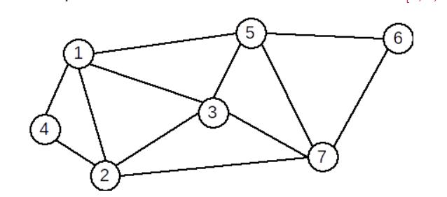

Graf neorientat
Definiție: Se numește graf neorientat o pereche ordonată de mulțimi G=(X,U), unde:
• X este o mulțime finită și nevidă de elemente numite vârfuri sau noduri;
• U este o mulțime finită de submulțimi cu două elemente din X, numite muchii.
Conform definiției:
• într-un graf neorientat nu există muchie de la un vârf la el însuși;
• intre două vârfuri distincte există cel mult o muchie.
Graf parțial.Subgraf. Graf completar
Definiție: Fie G=(X, U) un graf neorientat. Se numeşte graf partial al grafului G, graful neorientat G1=(X, U1), unde U1 ⊆ U.
Definiție. Fie G=(X, U) un graf orientat. Se numeşte subgraf al grafului G graful neorientat G1=(X1,U1) unde X1 ⊆ X iar U1 conține toate arcele din U
care au extremitățile în X1.
Definiție. Fie G=(X, U) un graf neorientat. Se numeşte graf complementar al grafului G, graful neorientat G1=(X, U1), cu proprietatea că două vârfuri x și y
sunt adiacente în G1 dacă și numai dacă nu sunt adiacente în G.
| Graf initial |
Graf partial |
Subgraf |
Graf complementar |
|
|
|
|
|
Graf nul. Graf complet. Graf regulat. Graf bipartit
Definiție: Un graf neorientat se numește graf nul dacă mulțimea muchiilor este vidă.
Într-un graf nul toate vârfurile sunt izolate.
Definiție. Fie G=(X, U) un graf neorientat. Graful G se numește graf complet dacă oricare două vârfuri distincte ale sale sunt adiacente.
Definiţie: Un graf G=(X, U) se numește graf bipartit dacă există două mulţimi nevide A și B astfel încât X=A ∪ B, A ∩ B = ∅ şi orice muchie u a lui G are
o extremitate în A iar cealaltă în B. Mulţimile A şi B formează o partiţie a lui X.
| Graf complet |
Graf regulat |
Graf bipartit |
|
|
|
|
Graf conex. Componente conexe
Definiție: Un graf neorientat se numește graf conex dacă pentru oricare două vârfuri x și y diferite ale sale, există cel puțin un lanț care
le leagă, adică x este extremitatea inițială și y este extremitatea finală.
Un graf cu un singur nod este, prin definiție, conex.
Definiție Se numește componentă conexă a unui graf G=(X,U) un subgraf H=(Y, V), conex, al lui G care are proprietatea că nu există nici un lanț în G care
să lege un vârf din Y cu un vârf din X-Y.
Subgraful H este conex și maximal cu această proprietate.
Graf Hamiltonian. Graf Eulerian
Definiție: Se numește graf hamiltonian un graf care conține un ciclu hamiltonian. Se numește ciclu hamiltonian un ciclu elementar care conține toate
vârfurile grafului.
Exemplu: Graful următor este hamiltonian. Un ciclu hamiltonian este: [1,4,2,3,7,6,5,1]
Definiție: Se numește graf eulerian un graf care conține un ciclu eulerian. Se numește ciclu eulerian un ciclu care conține toate muchiile grafului.
Exemplu: Graful următor este eulerian. Un ciclu eulerian este: [1,4,2,1,3,2,7,3,5,7,6,5,1]
| Graf Hamiltonian |
Graf Eulerian |
|
|
 |